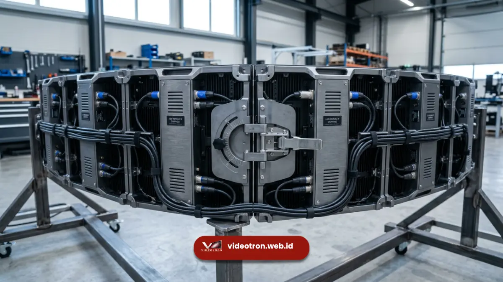

Videotron curved event adalah layar LED yang dirakit melengkung untuk menciptakan visual panggung yang imersif dan lebih menyatu dengan bentuk arsitektur acara.
Bentuk melengkung ini banyak dipakai pada backdrop panggung, booth pameran, dan konser korporat untuk memberikan daya tarik visual yang tidak dapat dicapai oleh layar datar standar.
Poin Penting Videotron Curved Event:
- Videotron curved event tersusun dari modul LED dengan cabinet fleksibel atau berengsel sehingga bisa dibentuk cembung maupun cekung.
- Bentuk melengkung membuat sudut pandang penonton lebih luas dan visual terasa lebih menyatu dengan panggung.
- Pemasangan videotron curved membutuhkan perhitungan radius, rigging, dan mapping konten yang berbeda dari layar datar.
- Biaya sewa videotron curved umumnya lebih tinggi dibanding videotron flat karena kompleksitas instalasi.
- Pemilihan vendor yang berpengalaman menjadi faktor penting agar hasil lengkungan rapi dan aman.
- 1. Apa Itu Videotron Curved Event?
- 2. Mengapa Videotron Curved Banyak Digunakan pada Event Korporat?
- 3. Bagaimana Cara Kerja Videotron Curved Dibanding Videotron Flat?
- 4. Apa Saja Manfaat Videotron Curved untuk Event?
- 5. Apa Saja Kesalahan Umum saat Menggunakan Videotron Curved Event?
- 6. Bagaimana Tips Memilih Videotron Curved yang Tepat untuk Event?
- 7. Berapa Kisaran Biaya Sewa Videotron Curved untuk Event?
- 8. Perbandingan Videotron Curved dan Videotron Flat
- 9. Bagaimana Peran Videotron Curved dalam Pengalaman Audiens?
Apa Itu Videotron Curved Event?
Videotron curved event adalah instalasi layar LED yang disusun melengkung, bukan datar, untuk kebutuhan panggung, backdrop, atau instalasi visual pada acara tertentu.
Konsep ini berkembang dari kebutuhan industri event untuk menghadirkan tampilan visual yang lebih dramatis dan menyatu dengan desain panggung.
Secara teknis, videotron curved memanfaatkan modul LED cabinet berukuran kecil yang disusun berjajar dengan sudut kemiringan tertentu antar modul. Semakin kecil ukuran cabinet, semakin halus lengkungan yang bisa dibentuk.
Videotron curved sering dijumpai pada konser musik, product launch, gala dinner korporat, hingga booth pameran dagang.
Berbeda dengan videotron flat yang hanya bisa dipasang lurus, videotron curved memungkinkan desainer panggung membentuk kurva cembung (convex), cekung (concave), bahkan kombinasi gelombang (wave) tergantung kebutuhan konsep acara. Fleksibilitas bentuk inilah yang membuat videotron curved menjadi pilihan populer untuk acara yang ingin tampil beda dari panggung konvensional.
Mengapa Videotron Curved Banyak Digunakan pada Event Korporat?
Videotron curved banyak dipilih karena mampu menghadirkan kesan premium dan pengalaman visual yang lebih immersive dibanding layar datar konvensional. Sudut pandang yang lebih luas membuat konten terlihat jelas dari berbagai posisi duduk tamu.
Beberapa alasan utama penggunaannya pada event korporat:
- Menciptakan kesan mewah dan modern yang sesuai untuk brand launching atau gala dinner.
- Menyatu secara visual dengan desain panggung yang melengkung atau berbentuk arena.
- Mengurangi distorsi pandang pada sudut ekstrem karena permukaan layar mengikuti bentuk audiens.
- Memberi ruang kreatif lebih luas bagi tim kreatif untuk merancang konten visual 3D atau ilusi kedalaman.
Karena faktor-faktor tersebut, videotron curved kerap menjadi elemen sentral dalam konsep panggung acara berskala menengah hingga besar, terutama yang mengedepankan pengalaman visual sebagai bagian dari storytelling brand.

Modul LED dengan cabinet bersambungan fleksibel memungkinkan pembentukan kurva presisi pada videotron curved event.Bagaimana Cara Kerja Videotron Curved Dibanding Videotron Flat?
Videotron curved bekerja dengan menyusun cabinet LED berukuran kecil yang saling terhubung dengan engsel atau sistem kunci fleksibel, sehingga membentuk sudut lengkung yang konsisten di sepanjang layar. Sistem ini berbeda dari videotron flat yang cabinetnya disusun rata sejajar.
Untuk memahami mekanisme teknologinya lebih mendalam, Anda dapat menyimak ulasan detail mengenai cara kerja videotron curved mulai dari sistem cabinet hingga konfigurasi media server.
Perbedaan mendasar terletak pada tiga aspek utama:
- Cabinet dan rangka: videotron curved memakai cabinet dengan sistem sambungan fleksibel atau cabinet khusus berbentuk trapesium kecil agar bisa membentuk kurva halus.
- Mapping konten: konten visual pada videotron curved membutuhkan proses mapping tambahan agar gambar tidak terdistorsi saat ditampilkan pada permukaan melengkung.
- Rigging dan struktur: karena bentuknya melengkung, sistem rigging videotron curved umumnya membutuhkan truss custom atau frame khusus yang mengikuti radius lengkungan yang direncanakan.
Menurut praktik umum di industri rental LED display Indonesia, radius lengkungan videotron curved yang paling sering dipakai untuk backdrop panggung berada pada rentang tertentu yang disesuaikan dengan ukuran panggung dan jarak pandang audiens, sehingga setiap proyek biasanya memerlukan survei lokasi sebelum instalasi dilakukan.
Apa Saja Manfaat Videotron Curved untuk Event?
Manfaat utama videotron curved untuk event adalah menciptakan pengalaman visual yang lebih imersif, memperluas sudut pandang audiens, dan mendukung konsep panggung yang lebih kreatif dibanding layar datar biasa.
Manfaat lain yang umum dirasakan penyelenggara event:
- Meningkatkan daya tarik visual acara sehingga lebih mudah diingat audiens dan berpotensi lebih banyak dibagikan di media sosial.
- Mendukung konten visual dinamis seperti animasi 3D, transisi cahaya, dan efek kedalaman yang sulit dicapai pada layar datar.
- Fleksibel digunakan untuk berbagai bentuk panggung, mulai dari panggung arena, catwalk, hingga booth pameran melingkar.
- Memberi kesan profesional dan modern yang cocok untuk brand yang ingin memperkuat citra premium.
Sebagian besar event organizer memilih videotron curved khususnya untuk momen puncak acara, seperti sesi keynote, product reveal, atau segmen hiburan utama, karena efek visualnya lebih terasa dibanding sesi lain.
Apa Saja Kesalahan Umum saat Menggunakan Videotron Curved Event?
Kesalahan umum dalam penggunaan videotron curved event biasanya terjadi pada tahap perencanaan awal, seperti perhitungan radius yang tidak sesuai konsep panggung atau pemilihan vendor tanpa pengalaman instalasi lengkung.
Beberapa kesalahan yang sering ditemui:
- Menentukan radius lengkungan tanpa mempertimbangkan jarak pandang audiens terdekat dan terjauh.
- Tidak melakukan survei lokasi sehingga struktur rigging tidak sesuai dengan kondisi venue.
- Menggunakan konten visual yang dirancang untuk layar datar tanpa proses mapping ulang.
- Memilih vendor berdasarkan harga termurah tanpa mengecek portofolio instalasi curved sebelumnya.
- Mengabaikan waktu setting yang lebih panjang dibanding videotron flat, sehingga jadwal load-in menjadi terlalu mepet.
Menghindari kesalahan ini penting agar hasil akhir videotron curved sesuai ekspektasi konsep acara dan tidak menimbulkan kendala teknis saat hari-H.
Bagaimana Tips Memilih Videotron Curved yang Tepat untuk Event?
Tips utama memilih videotron curved event adalah menyesuaikan radius lengkungan dengan konsep panggung, memastikan vendor berpengalaman, dan melakukan survei lokasi sebelum hari pelaksanaan.
Beberapa pertimbangan praktis yang bisa dijadikan acuan:
- Sesuaikan pixel pitch dengan jarak pandang audiens; jarak pandang dekat membutuhkan pixel pitch lebih rapat agar gambar tetap tajam.
- Diskusikan konsep bentuk lengkungan (convex, concave, atau wave) sejak tahap desain panggung bersama tim kreatif.
- Pastikan vendor menyediakan tim mapping konten khusus untuk permukaan melengkung.
- Tanyakan pengalaman vendor pada proyek videotron curved sebelumnya, termasuk skala dan tingkat kerumitan instalasi.
- Alokasikan waktu load-in dan rigging lebih panjang dibanding videotron flat untuk mengantisipasi penyesuaian struktur.
Kombinasi perencanaan konsep, spesifikasi teknis, dan pemilihan vendor yang tepat akan menentukan hasil akhir videotron curved secara keseluruhan.
Berapa Kisaran Biaya Sewa Videotron Curved untuk Event?
Biaya sewa videotron curved untuk event umumnya lebih tinggi dibanding videotron flat karena mempertimbangkan kompleksitas rigging, waktu instalasi, dan kebutuhan mapping konten tambahan.
Beberapa komponen yang biasanya memengaruhi besaran biaya sewa videotron curved:
- Luas total layar dan jumlah cabinet LED yang dibutuhkan untuk membentuk lengkungan sesuai konsep panggung.
- Tingkat kerumitan radius lengkungan, di mana kurva yang lebih tajam umumnya membutuhkan lebih banyak penyesuaian teknis.
- Durasi sewa, termasuk waktu load-in, show day, dan load-out yang biasanya lebih panjang dibanding videotron flat.
- Kebutuhan tim operator dan teknisi mapping konten selama acara berlangsung.
- Lokasi venue, terutama apabila membutuhkan biaya transportasi atau akomodasi tambahan bagi tim teknis.
Karena variabel yang cukup banyak, biaya sewa videotron curved sebaiknya dikonsultasikan langsung dengan vendor berdasarkan kebutuhan spesifik acara, termasuk ukuran layar, bentuk lengkungan, dan durasi penggunaan.
Perbandingan Videotron Curved dan Videotron Flat
Videotron curved dan videotron flat sama-sama memakai teknologi modul LED, namun berbeda pada fleksibilitas bentuk, kompleksitas instalasi, dan efek visual yang dihasilkan bagi audiens.
| Aspek | Videotron Curved | Videotron Flat |
|---|---|---|
| Bentuk Layar | Melengkung, dapat convex/concave | Datar sepenuhnya |
| Sudut Pandang | Lebih luas dan imersif | Optimal pada sudut tegak lurus |
| Kompleksitas Instalasi | Lebih tinggi, butuh rigging custom | Relatif standar |
| Mapping Konten | Membutuhkan penyesuaian khusus | Umumnya langsung tayang |
| Waktu Load-in | Lebih panjang | Lebih singkat |
| Kesan Visual | Premium dan dramatis | Fungsional dan praktis |
Sebelum mengambil keputusan akhir, pastikan Anda juga menimbang berbagai kelebihan dan kekurangan videotron curved untuk event agar alokasi budget dan waktu produksi tetap seimbang.
Bagaimana Peran Videotron Curved dalam Pengalaman Audiens?
Videotron curved berperan besar dalam membentuk pengalaman audiens karena bentuk melengkungnya mampu "membungkus" pandangan penonton, sehingga konten visual terasa lebih dekat dan personal dibanding layar datar.
Efek ini banyak dimanfaatkan pada segmen acara yang membutuhkan momen emosional atau dramatis, misalnya saat pembukaan acara, pengumuman penghargaan, atau presentasi produk baru.
Lengkungan layar membantu mengarahkan fokus visual audiens ke titik tengah panggung, sehingga pesan utama yang ingin disampaikan brand lebih mudah tertangkap tanpa terpecah oleh elemen panggung lain di sekitarnya.
Selain itu, videotron curved juga sering dipadukan dengan pencahayaan panggung dan elemen dekorasi lain untuk memperkuat kesan ruang tiga dimensi, sehingga audiens merasakan pengalaman yang lebih menyatu antara visual layar dan suasana panggung secara keseluruhan.
Videotron curved event menjadi solusi tepat bagi penyelenggara acara yang ingin menghadirkan panggung dengan kesan premium dan pengalaman visual yang lebih menyatu dengan audiens. Keberhasilan pemasangannya sangat bergantung pada perencanaan radius lengkungan, pemilihan vendor berpengalaman, dan proses mapping konten yang tepat.
Wujudkan visual panggung curved yang memukau untuk event Anda bersama videotron.web.id — hubungi kami sekarang untuk konsultasi teknis dan penawaran terbaik.

Hawa Nadira
LED Technology Consultant dan Visual Educator
Konsultan dan spesialis solusi display digital berdedikasi tinggi yang fokus membagikan panduan edukatif mengenai penerapan teknologi layar LED videotron untuk kebutuhan interior modern di Indonesia.